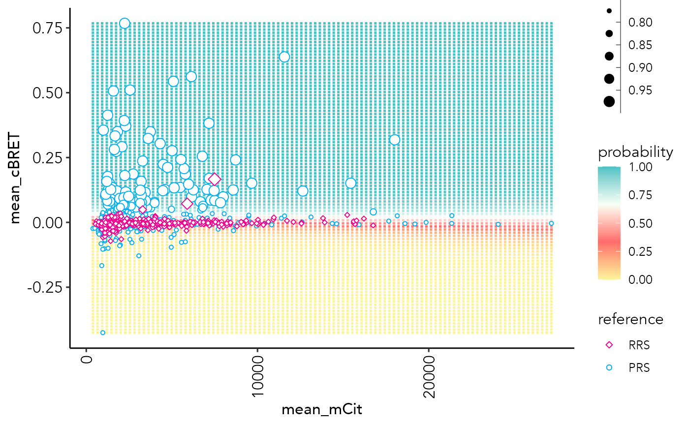

probGrid.plot.RdPlot a probability grid from the mean probabilities from the 'ensembleSize' number of models
probGrid.plot(
ppi_prediction_result,
n = 100,
x.log.scale = TRUE,
xlim = c(NA, NA),
ylim = NULL,
set = "train",
model = "all",
training_set = "all",
x.nudge = 1,
type = "2D",
assay = ppi_prediction_result$assay
)result object from the ppi.prediction() function.
grid size. For 3 assays, will be limited to grid size of 40 to reduce computing time.
logical to log-scale x-axis values
Numeric vector of two values specifying the left and right limit of the scale
Numeric vector of two values specifying the bottom and top limit of the scale
Character. PPI set to generate the plot for: "test" or "train"
Integer (1L) or "all". Plots the decision boundaries for a specific model (e.g. 1L for model 1) or the mean of all models.
Numerical. Which value to add to log transformation of x-axis values, in case of negative x values.
Character. Specify to plot as "2D" or "3D" plot for trainings with 3 features.
Character. Specifies which assays to plot against each other. Must be one of the training features.
a ggplot2 object
data("example_ppi_prediction")
probGrid.plot(example_ppi_prediction)
#> Warning: Removed 91 rows containing missing values (geom_point).
